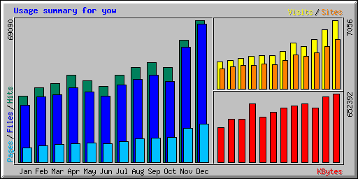

| Summary by Month | ||||||||||
|---|---|---|---|---|---|---|---|---|---|---|
| Month | Daily Avg | Monthly Totals | ||||||||
| Hits | Files | Pages | Visits | Sites | KBytes | Visits | Pages | Files | Hits | |
| Dec 2002 | 2228 | 2164 | 599 | 227 | 5107 | 652392 | 7056 | 18597 | 67102 | 69090 |
| Nov 2002 | 1974 | 1861 | 545 | 202 | 4348 | 624236 | 6087 | 16352 | 55830 | 59229 |
| Oct 2002 | 1484 | 1271 | 386 | 164 | 3726 | 515707 | 5090 | 11996 | 39412 | 46033 |
| Sep 2002 | 1611 | 1406 | 393 | 145 | 3332 | 554398 | 4372 | 11819 | 42204 | 48354 |
| Aug 2002 | 1483 | 1299 | 363 | 152 | 3493 | 534883 | 4717 | 11276 | 40278 | 45981 |
| Jul 2002 | 1372 | 1216 | 328 | 124 | 2898 | 514087 | 3855 | 10183 | 37712 | 42542 |
| Jun 2002 | 1228 | 1072 | 299 | 113 | 2470 | 474798 | 3392 | 8993 | 32170 | 36847 |
| May 2002 | 1276 | 1101 | 303 | 111 | 2558 | 428158 | 3442 | 9417 | 34144 | 39567 |
| Apr 2002 | 1417 | 1205 | 304 | 111 | 2382 | 556397 | 3331 | 9140 | 36173 | 42526 |
| Mar 2002 | 1238 | 1063 | 282 | 100 | 2404 | 411514 | 3104 | 8751 | 32966 | 38379 |
| Feb 2002 | 1289 | 1131 | 286 | 104 | 2279 | 410762 | 2937 | 8013 | 31686 | 36092 |
| Jan 2002 | 1033 | 892 | 219 | 88 | 2043 | 329308 | 2742 | 6808 | 27675 | 32053 |
| Totals | 6006640 | 50125 | 131345 | 477352 | 536693 | |||||